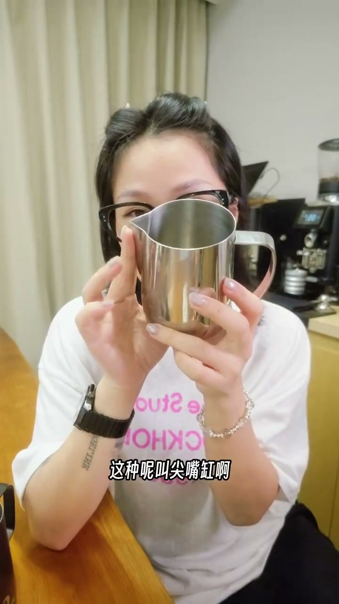
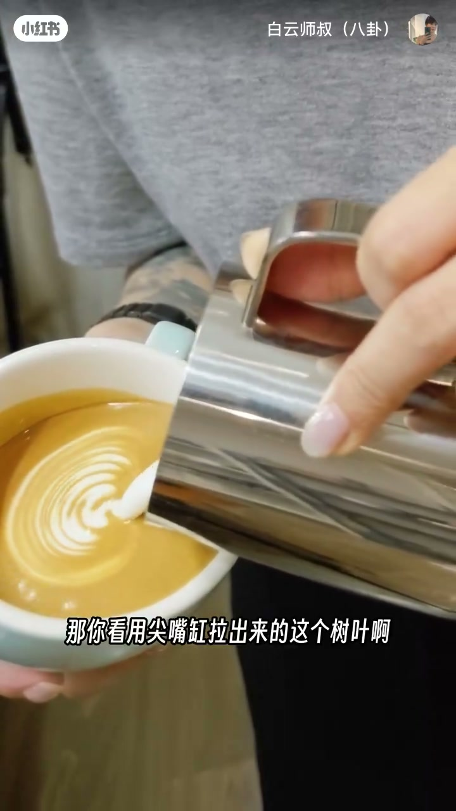
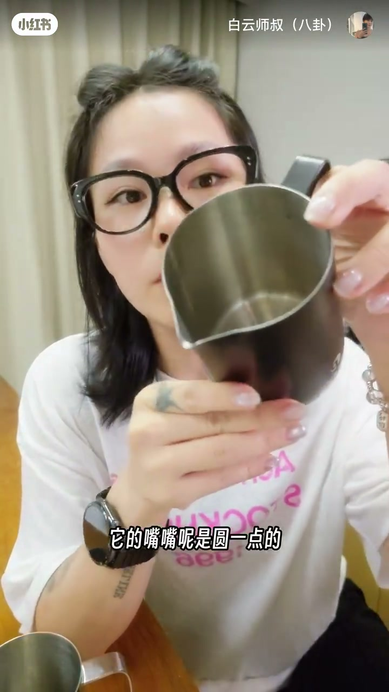
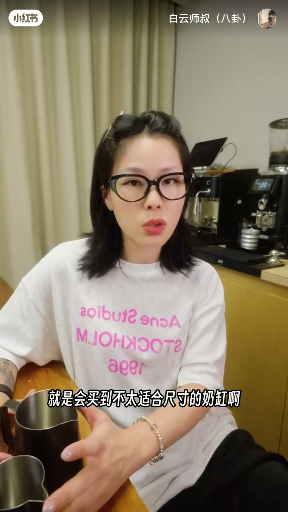
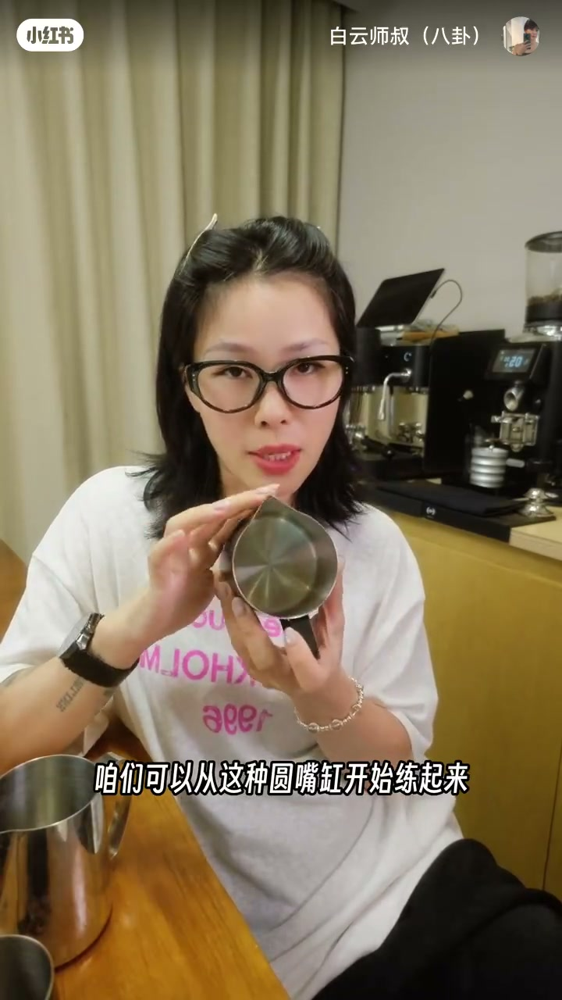

内容要点
白云师叔用「工欲善其事必先利其器」讲拉花缸选型：尖嘴缸出水集中适合精细图案，圆嘴缸出水面大适合大图案；容量要匹配杯量；内壁必须光滑。新手建议从圆嘴缸把大白星与郁金香练熟，再上尖嘴精进。
知识结构
尖嘴：集中、控力强→树叶/玫瑰/天鹅；圆嘴：更宽易铺开→星形/郁金香。
小缸≈180ml迷你拿铁；600cc店用大杯。缸大奶少形不成漩涡；内壁糙则奶泡挂壁。
先圆嘴练大白星与郁金香（容错高），手稳后再尖嘴雕精细图案。
拉花上限先被工具卡住：嘴型决定线宽与铺开，容量决定漩涡，内壁决定奶泡能不能出来。选型顺序是「杯量→嘴型→内壁」，练习顺序是「圆嘴打地基→尖嘴做细节」。
00:00-00:31尖嘴缸与圆嘴缸：出水决定图案类型
开场对照：两个缸拉出的图案完全不一样——选对拉花缸其实比想象中重要。尖嘴缸嘴窄，出水集中、控制力强，适合树叶、玫瑰、天鹅等精细图案；00:16 树叶脉络清晰是证据帧。
圆嘴缸嘴更圆更宽，出水面更大，更容易铺开，适合星形、郁金香这类大图案。嘴型不是审美偏好，而是图案尺度匹配。



00:31-01:06容量匹配杯量；内壁要光滑
容量怎么选：更小的缸适合迷你拿铁，大约 180 毫升左右到顶；600cc 适合咖啡店大杯拿铁出品。新手常买到尺寸不合适的奶缸——缸太大、倒的奶很少，牛奶量不够，蒸汽只在发泡却形不成好漩涡，奶泡就老打不好。
另一细节是内壁材质：选比较光滑的；若内壁非常粗糙，打好的奶泡全挂在缸壁上，本该刚好的奶泡量出不来，图形怎么也成不了。

01:06-01:31新手从圆嘴起步；再尖嘴精进
建议新手从圆嘴缸练起，先把大白星和郁金香练熟——圆嘴容错率更高。手感稳定后再买稍微尖嘴的，去雕琢更精细的图案。
收束点题：工欲善其事，必先利其器；工具选对了，离拉花大师就不远了。片尾号召评论区贴翻车拉花，系列署名 Six Coffee Casual Talk。

完整转录（58段）
以下文本由 Whisper medium 模型自动转录，可能存在少量识别误差，已尽可能修正。
这两个缸拉出来的图案完全不一样
那旋对拉光缸五元比你想象的要重要得多
这种叫尖嘴缸
它的缸嘴是尖尖的窄窄的
那出水相对来说比较集中
控制力强
那适合那些比较精细的图案
比如说你要出一些树叶 玫瑰 天鹅等等
那你可以用这种尖嘴缸来做
那你看用尖嘴缸拉出来的这种树叶
它的脉络纹理就特别的清晰
那么这种缸它就叫圆嘴缸
它的嘴嘴是圆一点的
那圆嘴缸它更宽
出水面更大
所以它更加的容易去铺开
那比较适合一些大的图案
比如说星形
然后玉金香的这种
OK 那么容量应该怎么选呢
比较小一点的这种缸
它就适合做一杯小小的迷你拿铁
比如说180毫升左右最大了
600cc这种适合一般咖啡店出品
它做一些大杯的拿铁等等
就是会用这种杯来出
新手最常犯的一些错误
就是会买到不太适合尺寸的奶缸
比如说缸太大了
然后倒的奶又很少
牛奶的量不够
它光在那里发泡了
它没有办法形成比较好的一个漩涡
所以打奶泡就老是打不好
那么还有一个细节
就是它这个内壁的材质
选这种内壁比较光滑的
如果选那种内壁非常粗糙的奶缸
你打好的这些奶泡
全部都挂在你这个奶缸上面
本身咱们这个拿铁的奶泡量是刚刚好的
结果挂在杯壁上出来都是Fly away
图形怎么也成不了
那我的建议就是新手
咱们可以从这种圆嘴缸开始练起来
先把大白星和玉金香这种练熟了
而且圆嘴的缸它的溶错率更高一点
等我们的手感稳定了之后再进行精进
你可以买这种稍微尖嘴的
去雕琢一些更加精细的图案
公寓善其事 必先利其器对不对
工具选对了
咱们离拉花大师还远吗
OK SisCoffee Casual Talk
好想看看大家的翻车拉花
欢迎在评论区贴出来
我要去找找我第一次拉出来的图案是什么
我已经忘记了非常之久